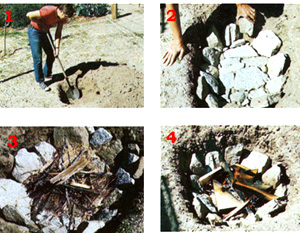
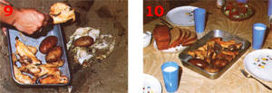

The Rudiments Of Pit Cookery
Includes recipes for chicken and potatoes, graham cracker delight and buttermilk biscuits.
By the Mother Earth News editors
July/August 1978
Cook mouthwateringly delicious meals without an oven, without electricity, without a flame of any kind, and without effort: That's what the accompanying report by Richard H. johnson is all about.
Have you ever stopped to think what you'd do if-for one reason or another-electricity and natural gas suddenly became unavailable (or intolerably expensive)? Right away, of course, you'd have to learn new, non energy-intensive ways of performing old duties (cooking, washing, and so on). And in all probability, the "new ways" you'd adopt would actually be ancient, primitive techniques that have served humankind well for thousands of years.
For instance, our family-for many seasons-has been using a "primitive" ovenless baking procedure ... a procedure that requires only a few handfuls of kindling to cook an entire meal. I'm talking, of course, about the "steaming pit" method of cookery that native Americans (and other peoples around the world) have been using successfully for more than 10,000 years.
HOW IT WORKS
The pit cookery technique involves little more than the slow, even release of heat (from firescorched rocks, or-sometimes-coals) within a sealed (underground) enclosure to cook food. Victuals prepared by this method are cooked slowly and evenly, and-as a result-the food's natural juices and flavors are sealed in rather than driven out. Also, since no combustion occurs during the actual cooking process, there is no danger of the vittles being burned.
MAKE YOUR OWN "PIT OVEN"
Step one in constructing an underground oven: Select an area free of dry brush and other fire hazards, and dig a hole measuring two feet wide by three feet long by a foot deep. Try to keep the pit's walls fairly vertical, and pile the excavated dirt as near the hole as possible without allowing it to fall back in. (You'll need the dirt later.)
Next, line both the pit's bottom and sides with fairly flat rocks... (Round stones can be used if necessary . . . the only problem is that they take up more room in the pit than flat ones do. Consequently, you may want to enlarge your "oven" a bit if you end up using oddshaped rocks.) Whatever you do, don't use stones from a stream bed: Such rocks tend (because of the moisture that's trapped inside them) to explode when they're subjected to extreme heat.
After you've completely "tiled" the floor and walls of your pit, it's time to build a small fire to heat the rocks. (Before going any further, check with local authorities to see that you are not violating any ordinances. If a fire permit is required, by all means get one!) Lay the blaze so it will heat the entire length and width of the pit, and keep the flames relatively small. (Remember, you're only trying to heat the rocks . . . not all outdoors.) Use hardwood twigs and branches if at all possible: They'll produce the best bed of coals and will burn the hottest and longest.
Allow the fire to burn for 45 minutes to an hour before it dies down. The smoldering coals will then keep the pit hot while you prepare the food that will go into the "oven".
LOADING THE PIT
Once you've readied your edibles for baking, scoop all the coals from the interior of the pit. ( Sometimes we just scrape them down to one end of the oven-and cook our food in the other end-since we rarely use the entire space for cooking.) It's important to keep the coals well away from your meal . . . because if you don't, the glowing embers will often burn awful-tasting little charcoal spots into the food!
OK. The pit's hot stone lining is now exposed and ready to do its work. At this point, the rocks are sufficiently toasty to fry (and/or burn) eggs upon . . . which means they're also capable of burning your meal unless some precautions are taken. The accepted practice among the peoples who habitually use the fire pit is to wrap their victuals in some kind of insulating material: fresh grass, large edible leaves, or other foliage. (Be sure the greens you use for this purpose are edible . . . don't just select any wild leafy plant at random.) You can, of course, wrap your viands in aluminum foil . . . but you won't get quite the flavor that way that you get with fresh watercress, for example, or maybe some mint or curly dock or dandelion.
In any case, lay a thick layer of your insulator on the pit's stone floor . . . place your victuals on top of the edible leaves ... then spread another heavy layer of greens over the meal and sprinkle about a cup of water over everything (the water, of course, will produce steam during the cooking period). Next, place a piece of cowhide (or carpeting, or slabs of bark, or plywood, or anything else that'll keep dirt from sifting through to the food) over the top layer of foliage. Quickly cover the entire area with about four inches of soil . . . then just go do something else for three hours.
When you return, carefully remove the cowhide (or other protective cover) . . . and prepare yourself for some mighty good eating!
PRACTICE MAKES PERFECT
I'll have to admit that our first attempt at cooking food underground was thoroughly experimental . . . which is another way of saying that we made a few mistakes. (Our first oven, for instance, turned out large enough to cook a medium-sized cow in!)
Take our word for it then: A pit oven need only be about three times the size of the food that you intend to prepare. (It doesn't even have to be that big: I've
cooked a whole chicken in a pit not much larger than the bird itself.) A fairly large excavation can, however, be used to bake small meals if you partition off (with a pile of dirt) the area you want to cook the food in.
It's even possible to use the "steaming pit" method in places where digging a hole is (for one reason or another) impractical. All you have to do is construct an aboveground "pit" by piling rocks in a circular fashion over a stone base. You can then proceed in the same manner as with the underground oven.
A few more things we've learned: When preparing roasts and hams, it's best to cut the meat into a number of smaller pieces so it'll cook faster and more thoroughly. A turkey or chicken-on the other hand-can be cooked whole if a few small, hot stones are placed inside the bird's body cavity. Foods that are well wrapped in foil (or sealed inside a covered pot or Dutch oven) can be cooked right on the pit's coals.
And that's about all there is to it. Once you get the hang of pit cookery, you'll be able to prepare a great many of your family's favorite dishes underground, without the aid of gas or electricity. Here, for example, are just a few of our tribe's favorite pit oven specialties:
CHICKEN AND POTATOES
watercress 1 whole, cleaned chicken 4 potatoes, washed and deeyed salt and/or other seasonings to taste
Prepare a steaming pit and lay a bed of watercress down in it. Place the chicken on the bed of cress, surround it with potatoes, season to taste, and cover the meal with another layer of greens. Seal the pit and cook for three hours. (Serves four.)
GRAHAM CRACKER DELIGHT
butter
20 graham crackers, crushed
2 tablespoons of sugar
I/4 cup of butter
1/2 cup of chopped nuts
1 can of your favorite pie filling
Line a 9" piepan with aluminum foil and butter the foil thoroughly. Mix the dry ingredients (and the quarter cup of butter) together . . . then sprinkle twothirds of the mixture on the bottom of the piepan, pour in the filling, and sprinkle on the remaining graham cracker mix. Cover the pie with foil and bake it in hot coals for 20 to 30 minutes. Serves eight.
BUTTERMILK BISCUITS
2 cups of flour
1 teaspoon of salt
3 teaspoons of baking powder
2/3 cup of buttermilk
1/2 cup of oil
Sift all the dry ingredients together in a bowl, then add the buttermilk and oil and stir until moist. (Do not overbeat.) Roll out the dough, cut the biscuits, and seal them in foil. Bury the foil pouches in hot coals and allow them to cook until the bread is brown . . . about 15 minutes. (Yield: 12 biscuits.)
|
 [1] Choose a brush-free site for your pit. [2] Flat stones for cooking line the oven. [3] Lay a tinder base to start your fire. [4] Keep a small blaze going for an hour. |
 [5] Coals out, greens in, on with the meal.Cook mouthwateringly delicious meals without an oven, without electricity, without a flame of any;[6]Add fresh greens and water to steam. [7J Shield the vittles from falling dirt. [8] Seal with soil, and await your feast! |
 [9] A finished meal comes out of the Pit. . .[10] and onto the table (but not for long) |